常用的 SQL 数据库的数据都是存在磁盘中的，虽然在数据库底层也做了对应的缓存来减少数据库的 IO 压力。
由于数据库的缓存一般是针对查询的内容，而且粒度也比较小，一般只有表中的数据没有发生变动的时候，数据库的缓存才会产生作用。
但这并不能减少业务逻辑对数据库的增删改操作的 IO 压力，因此缓存技术应运而生，该技术实现了对热点数据的高速缓存，可以大大缓解后端数据库的压力。
主流应用架构
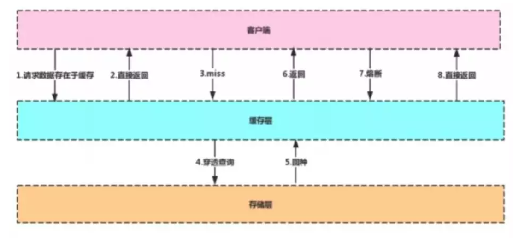
客户端在对数据库发起请求时，先到缓存层查看是否有所需的数据，如果缓存层存有客户端所需的数据，则直接从缓存层返回，否则进行穿透查询，对数据库进行查询。
如果在数据库中查询到该数据，则将该数据回写到缓存层，以便下次客户端再次查询能够直接从缓存层获取数据。
缓存中间件 Memcache 和 Redis 的区别
Memcache 的代码层类似 Hash，特点如下：
- 支持简单数据类型
- 不支持数据持久化存储
- 不支持主从
- 不支持分片
Redis 特点如下：
- 数据类型丰富
- 支持数据磁盘持久化存储
- 支持主从
- 支持分片
为什么 Redis 能这么快
Redis 的效率很高，官方给出的数据是 100000+QPS，这是因为：
Redis 完全基于内存，绝大部分请求是纯粹的内存操作，执行效率高。
Redis 使用单进程单线程模型的（K，V）数据库，将数据存储在内存中，存取均不会受到硬盘 IO 的限制，因此其执行速度极快。
另外单线程也能处理高并发请求，还可以避免频繁上下文切换和锁的竞争，如果想要多核运行也可以启动多个实例。
数据结构简单，对数据操作也简单，Redis 不使用表，不会强制用户对各个关系进行关联，不会有复杂的关系限制，其存储结构就是键值对，类似于 HashMap，HashMap 最大的优点就是存取的时间复杂度为 O(1)。
Redis 使用多路 I/O 复用模型，为非阻塞 IO。
注：Redis 采用的 I/O 多路复用函数：epoll/kqueue/evport/select。
选用策略：
- 因地制宜，优先选择时间复杂度为 O(1) 的 I/O 多路复用函数作为底层实现。
- 由于 Select 要遍历每一个 IO，所以其时间复杂度为 O(n)，通常被作为保底方案。
- 基于 React 设计模式监听 I/O 事件。
Redis 的数据类型
String
最基本的数据类型，其值最大可存储 512M，二进制安全（Redis 的 String 可以包含任何二进制数据，包含 jpg 对象等）。
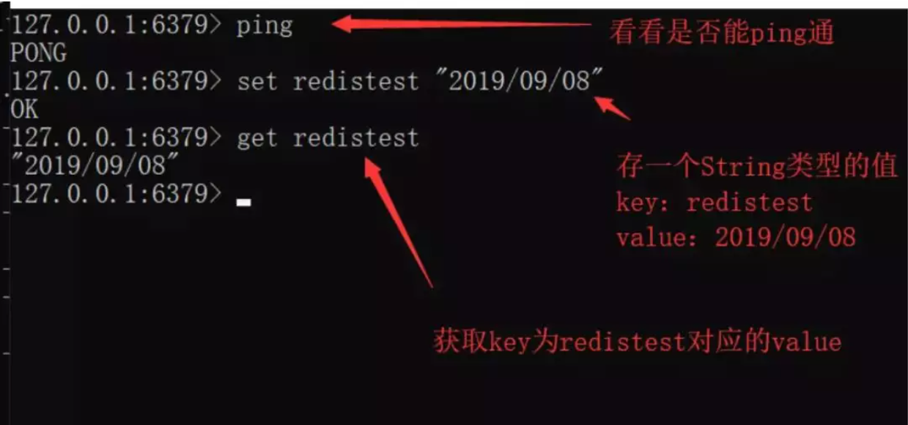
注：如果重复写入 key 相同的键值对，后写入的会将之前写入的覆盖。
Hash
String 元素组成的字典，适用于存储对象。
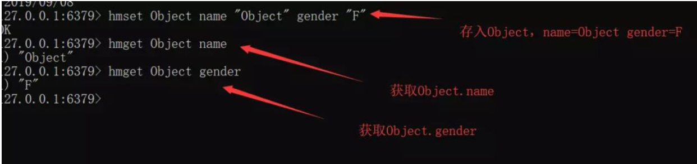
List
列表，按照 String 元素插入顺序排序。其顺序为后进先出。由于其具有栈的特性，所以可以实现如“最新消息排行榜”这类的功能。
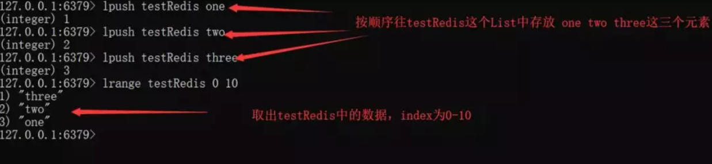
Set
String 元素组成的无序集合，通过哈希表实现（增删改查时间复杂度为 O(1)），不允许重复。
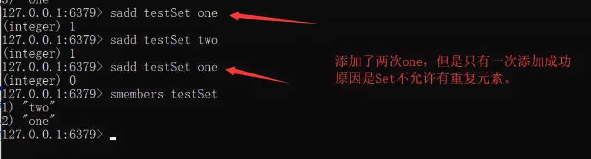
另外，当我们使用 Smembers 遍历 Set 中的元素时，其顺序也是不确定的，是通过 Hash 运算过后的结果。
Redis 还对集合提供了求交集、并集、差集等操作，可以实现如同共同关注，共同好友等功能。
Sorted Set
通过分数来为集合中的成员进行从小到大的排序。
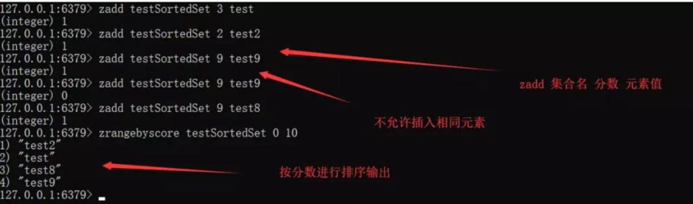
更高级的 Redis 类型
用于计数的 HyperLogLog、用于支持存储地理位置信息的 Geo。
从海量 Key 里查询出某一个固定前缀的 Key
REDIS函数常见问题
假设 Redis 中有十亿条 Key，如何从这么多 Key 中找到固定前缀的 Key？
方法 1：使用 Keys [pattern]：查找所有符合给定模式 Pattern 的 Key
使用 Keys [pattern] 指令可以找到所有符合 Pattern 条件的 Key，但是 Keys 会一次性返回所有符合条件的 Key，所以会造成 Redis 的卡顿。
假设 Redis 此时正在生产环境下，使用该命令就会造成隐患，另外如果一次性返回所有 Key，对内存的消耗在某些条件下也是巨大的。
例：
keys test* //返回所有以test为前缀的key
方法 2：使用 SCAN cursor [MATCH pattern] [COUNT count]
注：
- cursor：游标
- MATCH pattern：查询 Key 的条件
- Count：返回的条数
SCAN 是一个基于游标的迭代器，需要基于上一次的游标延续之前的迭代过程。
SCAN 以 0 作为游标，开始一次新的迭代，直到命令返回游标 0 完成一次遍历。
此命令并不保证每次执行都返回某个给定数量的元素，甚至会返回 0 个元素，但只要游标不是 0，程序都不会认为 SCAN 命令结束，但是返回的元素数量大概率符合 Count 参数。另外，SCAN 支持模糊查询。
例：
SCAN 0 MATCH test* COUNT 10 //每次返回10条以test为前缀的key
如何通过 Redis 实现分布式锁?
分布式锁
分布式锁是控制分布式系统之间共同访问共享资源的一种锁的实现。如果一个系统，或者不同系统的不同主机之间共享某个资源时，往往需要互斥，来排除干扰，满足数据一致性。
分布式锁需要解决的问题如下：
互斥性：任意时刻只有一个客户端获取到锁，不能有两个客户端同时获取到锁。
安全性：锁只能被持有该锁的客户端删除，不能由其他客户端删除。
死锁：获取锁的客户端因为某些原因而宕机继而无法释放锁，其他客户端再也无法获取锁而导致死锁，此时需要有特殊机制来避免死锁。
容错：当各个节点，如某个 Redis 节点宕机的时候，客户端仍然能够获取锁或释放锁。
使用 SETNX 实现，SETNX key value：如果 Key 不存在，则创建并赋值。
该命令时间复杂度为 O(1)，如果设置成功，则返回 1，否则返回 0。
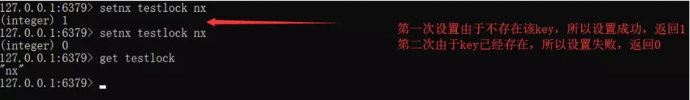
由于 SETNX 指令操作简单，且是原子性的，所以初期的时候经常被人们作为分布式锁，我们在应用的时候，可以在某个共享资源区之前先使用 SETNX 指令，查看是否设置成功。
如果设置成功则说明前方没有客户端正在访问该资源，如果设置失败则说明有客户端正在访问该资源，那么当前客户端就需要等待。
但是如果真的这么做，就会存在一个问题，因为 SETNX 是长久存在的，所以假设一个客户端正在访问资源，并且上锁，那么当这个客户端结束访问时，该锁依旧存在，后来者也无法成功获取锁，这个该如何解决呢？
由于 SETNX 并不支持传入 EXPIRE 参数，所以我们可以直接使用 EXPIRE 指令来对特定的 Key 来设置过期时间。
用法：
EXPIRE key seconds
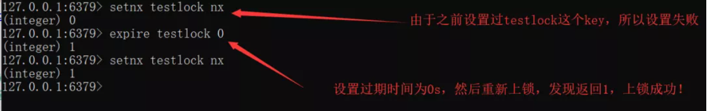
程序：
RedisService redisService = SpringUtils.getBean(RedisService.class);
long status = redisService.setnx(key,"1");
if(status == 1){
redisService.expire(key,expire);
doOcuppiedWork();
}
这段程序存在的问题：假设程序运行到第二行出现异常，那么程序来不及设置过期时间就结束了，则 Key 会一直存在，等同于锁一直被持有无法释放。
出现此问题的根本原因为：原子性得不到满足。
解决：从 Redis 2.6.12 版本开始，我们就可以使用 Set 操作，将 SETNX 和 EXPIRE 融合在一起执行，具体做法如下：
- EX second：设置键的过期时间为 Second 秒。
- PX millisecond：设置键的过期时间为 MilliSecond 毫秒。
- NX：只在键不存在时，才对键进行设置操作。
- XX：只在键已经存在时，才对键进行设置操作。
SET KEY value [EX seconds] [PX milliseconds] [NX|XX]
注：SET 操作成功完成时才会返回 OK，否则返回 nil。
有了 SET 我们就可以在程序中使用类似下面的代码实现分布式锁了：
RedisService redisService = SpringUtils.getBean(RedisService.class);
String result = redisService.set(lockKey,requestId,SET_IF_NOT_EXIST,SET_WITH_EXPIRE_TIME,expireTime);
if("OK.equals(result)"){
doOcuppiredWork();
}
如何实现异步队列?
①使用 Redis 中的 List 作为队列
使用上文所说的 Redis 的数据结构中的 List 作为队列 Rpush 生产消息，LPOP 消费消息。
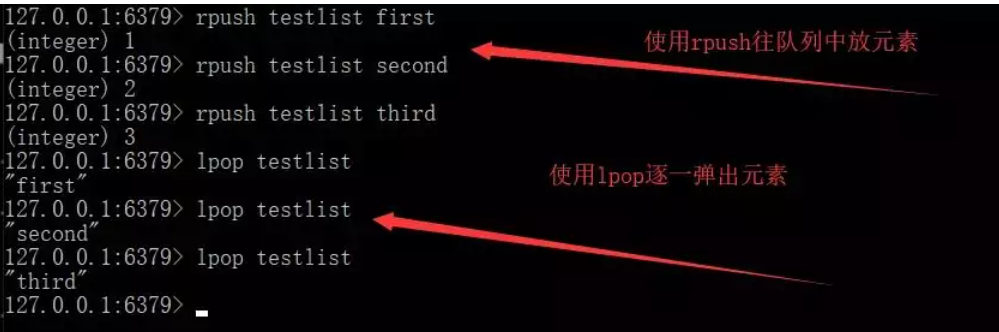
此时我们可以看到，该队列是使用 Rpush 生产队列，使用 LPOP 消费队列。
在这个生产者-消费者队列里，当 LPOP 没有消息时，证明该队列中没有元素，并且生产者还没有来得及生产新的数据。
缺点：LPOP 不会等待队列中有值之后再消费，而是直接进行消费。
弥补：可以通过在应用层引入 Sleep 机制去调用 LPOP 重试。
②使用 BLPOP key [key…] timeout
BLPOP key [key …] timeout：阻塞直到队列有消息或者超时。
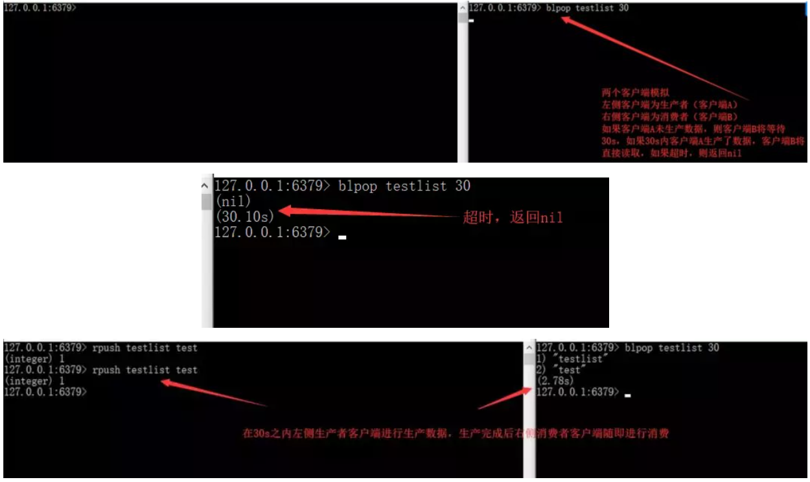
缺点：按照此种方法，我们生产后的数据只能提供给各个单一消费者消费。能否实现生产一次就能让多个消费者消费呢？
③Pub/Sub：主题订阅者模式
发送者（Pub）发送消息，订阅者（Sub）接收消息。订阅者可以订阅任意数量的频道。
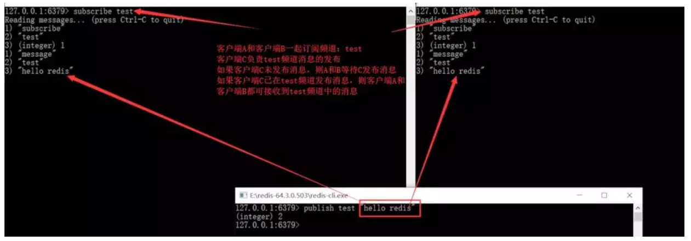
Pub/Sub模式的缺点：消息的发布是无状态的，无法保证可达。对于发布者来说，消息是“即发即失”的。
此时如果某个消费者在生产者发布消息时下线，重新上线之后，是无法接收该消息的，要解决该问题需要使用专业的消息队列，如 Kafka…此处不再赘述。
Redis 持久化
什么是持久化
持久化，即将数据持久存储，而不因断电或其他各种复杂外部环境影响数据的完整性。
由于 Redis 将数据存储在内存而不是磁盘中，所以内存一旦断电，Redis 中存储的数据也随即消失，这往往是用户不期望的，所以Redis 有持久化机制来保证数据的安全性。
Redis 如何做持久化
Redis 目前有两种持久化方式，即 RDB 和 AOF，RDB 是通过保存某个时间点的全量数据快照实现数据的持久化，当恢复数据时，直接通过 RDB 文件中的快照，将数据恢复。
RDB（快照）持久化
RDB持久化会在某个特定的间隔保存那个时间点的全量数据的快照。
RDB 配置文件，redis.conf：
save 900 1 #在900s内如果有1条数据被写入，则产生一次快照。
save 300 10 #在300s内如果有10条数据被写入，则产生一次快照
save 60 10000 #在60s内如果有10000条数据被写入，则产生一次快照
stop-writes-on-bgsave-error yes
#stop-writes-on-bgsave-error ：
如果为yes则表示，当备份进程出错的时候，
主进程就停止进行接受新的写入操作，这样是为了保护持久化的数据一致性的问题。
RDB 的创建与载入
SAVE：阻塞 Redis 的服务器进程，直到 RDB 文件被创建完毕。SAVE 命令很少被使用，因为其会阻塞主线程来保证快照的写入，由于 Redis 是使用一个主线程来接收所有客户端请求，这样会阻塞所有客户端请求。
BGSAVE：该指令会 Fork 出一个子进程来创建 RDB 文件，不阻塞服务器进程，子进程接收请求并创建 RDB 快照，父进程继续接收客户端的请求。
子进程在完成文件的创建时会向父进程发送信号，父进程在接收客户端请求的过程中，在一定的时间间隔通过轮询来接收子进程的信号。
我们也可以通过使用 lastsave 指令来查看 BGSAVE 是否执行成功，lastsave 可以返回最后一次执行成功 BGSAVE 的时间。
自动化触发 RDB 持久化的方式
自动化触发RDB持久化的方式如下：
- 根据 redis.conf 配置里的 SAVE m n 定时触发（实际上使用的是 BGSAVE）。
- 主从复制时，主节点自动触发。
- 执行 Debug Reload。
- 执行 Shutdown 且没有开启 AOF 持久化。
BGSAVE 的原理
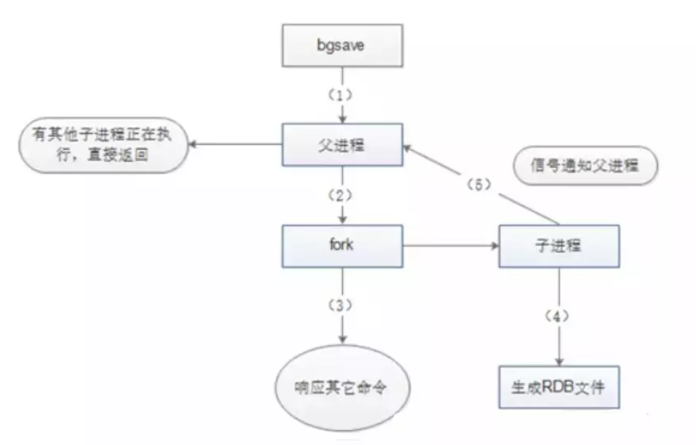
启动：
- 检查是否存在子进程正在执行 AOF 或者 RDB 的持久化任务。如果有则返回 false。
- 调用 Redis 源码中的 rdbSaveBackground 方法，方法中执行 fork() 产生子进程执行 RDB 操作。
- 关于 fork() 中的 Copy-On-Write。
fork() 在 Linux 中创建子进程采用 Copy-On-Write（写时拷贝技术），即如果有多个调用者同时要求相同资源（如内存或磁盘上的数据存储）。
他们会共同获取相同的指针指向相同的资源，直到某个调用者试图修改资源的内容时，系统才会真正复制一份专用副本给调用者，而其他调用者所见到的最初的资源仍然保持不变。
RDB 持久化方式的缺点
RDB 持久化方式的缺点如下：
- 内存数据全量同步，数据量大的状况下，会由于 I/O 而严重影响性能。
- 可能会因为 Redis 宕机而丢失从当前至最近一次快照期间的数据。
AOF 持久化
保存写状态
AOF 持久化是通过保存 Redis 的写状态来记录数据库的。
相对 RDB 来说，RDB 持久化是通过备份数据库的状态来记录数据库，而 AOF 持久化是备份数据库接收到的指令：
- AOF 记录除了查询以外的所有变更数据库状态的指令。
- 以增量的形式追加保存到 AOF 文件中。
开启 AOF 持久化
①打开 redis.conf 配置文件，将 appendonly 属性改为 yes。
②修改 appendfsync 属性，该属性可以接收三种参数，分别是 always，everysec，no。
always 表示总是即时将缓冲区内容写入 AOF 文件当中，everysec 表示每隔一秒将缓冲区内容写入 AOF 文件，no 表示将写入文件操作交由操作系统决定。
一般来说，操作系统考虑效率问题，会等待缓冲区被填满再将缓冲区数据写入 AOF 文件中。
appendonly yes
#appendsync always
appendfsync everysec
# appendfsync no
日志重写解决 AOF 文件不断增大
随着写操作的不断增加，AOF 文件会越来越大。假设递增一个计数器 100 次，如果使用 RDB 持久化方式，我们只要保存最终结果 100 即可。
而 AOF 持久化方式需要记录下这 100 次递增操作的指令，而事实上要恢复这条记录，只需要执行一条命令就行，所以那一百条命令实际可以精简为一条。
Redis 支持这样的功能，在不中断前台服务的情况下，可以重写 AOF 文件，同样使用到了 COW（写时拷贝）。
重写过程如下：
- 调用 fork()，创建一个子进程。
- 子进程把新的 AOF 写到一个临时文件里，不依赖原来的 AOF 文件。
- 主进程持续将新的变动同时写到内存和原来的 AOF 里。
- 主进程获取子进程重写 AOF 的完成信号，往新 AOF 同步增量变动。
- 使用新的 AOF 文件替换掉旧的 AOF 文件。
AOF后台重写
aof_rewrite函数可以创建新的AOF文件，但是这个函数会进行大量的写入操作，所以调用这个函数的线程将被长时间的阻塞，因为Redis服务器使用单线程来处理命令请求；所以如果直接是服务器进程调用AOF_REWRITE函数的话，那么重写AOF期间，服务器将无法处理客户端发送来的命令请求；- Redis不希望AOF重写会造成服务器无法处理请求，所以Redis决定将AOF重写程序放到子进程（后台）里执行。这样处理的最大好处是：
- 子进程进行AOF重写期间，主进程可以继续处理命令请求；
- 子进程带有主进程的数据副本，使用子进程而不是线程，可以避免在锁的情况下，保证数据的安全性。
使用子进程进行AOF重写的问题
- 子进程在进行AOF重写期间，服务器进程还要继续处理命令请求，而新的命令可能对现有的数据进行修改，这会让当前数据库的数据和重写后的AOF文件中的数据不一致。
如何修正
- 为了解决这种数据不一致的问题，Redis增加了一个AOF重写缓存，这个缓存在fork出子进程之后开始启用，Redis服务器主进程在执行完写命令之后，会同时将这个写命令追加到AOF缓冲区和AOF重写缓冲区
- 即子进程在执行AOF重写时，主进程需要执行以下三个工作：
- 执行client发来的命令请求；
- 将写命令追加到现有的AOF文件中；
- 将写命令追加到AOF重写缓存中。
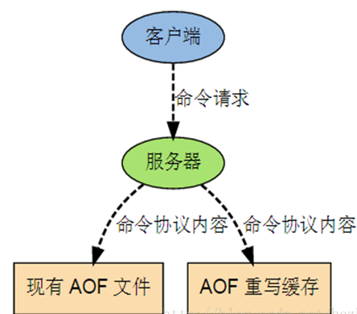
效果
- 可以保证：
- AOF缓冲区的内容会定期被写入和同步到AOF文件中，对现有的AOF文件的处理工作会正常进行
- 从创建子进程开始，服务器执行的所有写操作都会被记录到AOF重写缓冲区中；
完成AOF重写之后
- 当子进程完成对AOF文件重写之后，它会向父进程发送一个完成信号，父进程接到该完成信号之后，会调用一个信号处理函数，该函数完成以下工作：
- 将AOF重写缓存中的内容全部写入到新的AOF文件中；这个时候新的AOF文件所保存的数据库状态和服务器当前的数据库状态一致；
- 对新的AOF文件进行改名，原子的覆盖原有的AOF文件；完成新旧两个AOF文件的替换。
- 当这个信号处理函数执行完毕之后，主进程就可以继续像往常一样接收命令请求了。在整个AOF后台重写过程中，只有最后的“主进程写入命令到AOF缓存”和“对新的AOF文件进行改名，覆盖原有的AOF文件。”这两个步骤（信号处理函数执行期间）会造成主进程阻塞，在其他时候，AOF后台重写都不会对主进程造成阻塞，这将AOF重写对性能造成的影响降到最低。
触发AOF后台重写的条件
- AOF重写可以由用户通过调用
BGREWRITEAOF手动触发。 - 服务器在AOF功能开启的情况下，会维持以下三个变量：
- 记录当前AOF文件大小的变量
aof_current_size。 - 记录最后一次AOF重写之后，AOF文件大小的变量
aof_rewrite_base_size。 - 增长百分比变量
aof_rewrite_perc。
- 记录当前AOF文件大小的变量
- 每次当
serverCron（服务器周期性操作函数）函数执行时，它会检查以下条件是否全部满足，如果全部满足的话，就触发自动的AOF重写操作：- 没有BGSAVE命令（RDB持久化）/AOF持久化在执行；
- 没有BGREWRITEAOF在进行；
- 当前AOF文件大小要大于
server.aof_rewrite_min_size（默认为1MB），或者在redis.conf配置了auto-aof-rewrite-min-size大小； - 当前AOF文件大小和最后一次重写后的大小之间的比率等于或者等于指定的增长百分比（在配置文件设置了
auto-aof-rewrite-percentage参数，不设置默认为100%）
如果前面三个条件都满足，并且当前AOF文件大小比最后一次AOF重写时的大小要大于指定的百分比，那么触发自动AOF重写。
AOF 和 RDB 的优缺点
AOF 和 RDB 的优缺点如下
- RDB 优点：全量数据快照，文件小，恢复快。
- RDB 缺点：无法保存最近一次快照之后的数据。
- AOF 优点：可读性高，适合保存增量数据，数据不易丢失。
- AOF 缺点：文件体积大，恢复时间长。
RDB-AOF 混合持久化方式
Redis 4.0 之后推出了此种持久化方式，RDB 作为全量备份，AOF 作为增量备份，并且将此种方式作为默认方式使用。
在上述两种方式中，RDB 方式是将全量数据写入 RDB 文件，这样写入的特点是文件小，恢复快，但无法保存最近一次快照之后的数据，AOF 则将 Redis 指令存入文件中，这样又会造成文件体积大，恢复时间长等弱点。
在 RDB-AOF 方式下，持久化策略首先将缓存中数据以 RDB 方式全量写入文件，再将写入后新增的数据以 AOF 的方式追加在 RDB 数据的后面，在下一次做 RDB 持久化的时候将 AOF 的数据重新以 RDB 的形式写入文件。
这种方式既可以提高读写和恢复效率，也可以减少文件大小，同时可以保证数据的完整性。
在此种策略的持久化过程中，子进程会通过管道从父进程读取增量数据，在以 RDB 格式保存全量数据时，也会通过管道读取数据，同时不会造成管道阻塞。
可以说，在此种方式下的持久化文件，前半段是 RDB 格式的全量数据，后半段是 AOF 格式的增量数据。此种方式是目前较为推荐的一种持久化方式。
Redis 数据的恢复
RDB 和 AOF 文件共存情况下的恢复流程如下图：
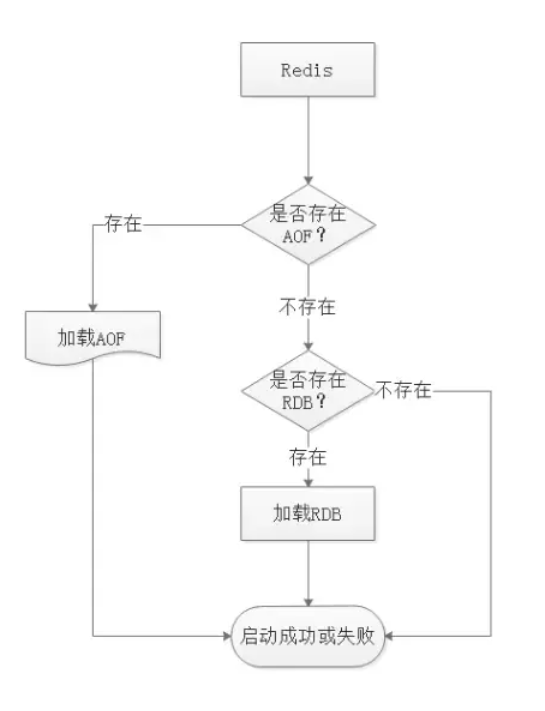
从图可知，Redis 启动时会先检查 AOF 是否存在，如果 AOF 存在则直接加载 AOF，如果不存在 AOF，则直接加载 RDB 文件。
Pineline
Pipeline 和 Linux 的管道类似，它可以让 Redis 批量执行指令。
Redis 基于请求/响应模型，单个请求处理需要一一应答。如果需要同时执行大量命令，则每条命令都需要等待上一条命令执行完毕后才能继续执行，这中间不仅仅多了 RTT，还多次使用了系统 IO。
Pipeline 由于可以批量执行指令，所以可以节省多次 IO 和请求响应往返的时间。但是如果指令之间存在依赖关系，则建议分批发送指令。
Redis 的同步机制
主从同步原理
Redis 一般是使用一个 Master 节点来进行写操作，而若干个 Slave 节点进行读操作，Master 和 Slave 分别代表了一个个不同的Redis Server 实例。
另外定期的数据备份操作也是单独选择一个 Slave 去完成，这样可以最大程度发挥 Redis 的性能，为的是保证数据的弱一致性和最终一致性。
另外，Master 和 Slave 的数据不是一定要即时同步的，但是在一段时间后 Master 和 Slave 的数据是趋于同步的，这就是最终一致性。
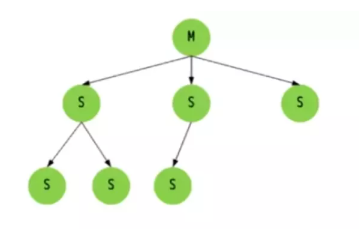
全同步过程
- Slave 发送 Sync 命令到 Master。
- Master 启动一个后台进程，将 Redis 中的数据快照保存到文件中。
- Master 将保存数据快照期间接收到的写命令缓存起来。
- Master 完成写文件操作后，将该文件发送给 Slave。
- 使用新的 AOF 文件替换掉旧的 AOF 文件。
- Master 将这期间收集的增量写命令发送给 Slave 端。
增量同步过程
- Master 接收到用户的操作指令，判断是否需要传播到 Slave。
- 将操作记录追加到 AOF 文件。
- 将操作传播到其他 Slave：对齐主从库；往响应缓存写入指令。
- 将缓存中的数据发送给 Slave。
Redis Sentinel（哨兵）
主从模式弊端：当 Master 宕机后，Redis 集群将不能对外提供写入操作。Redis Sentinel 可解决这一问题。
解决主从同步 Master 宕机后的主从切换问题：
- 监控：检查主从服务器是否运行正常。
- 提醒：通过 API 向管理员或者其它应用程序发送故障通知。
- 自动故障迁移：主从切换（在 Master 宕机后，将其中一个 Slave 转为 Master，其他的 Slave 从该节点同步数据）。
Redis 集群
如何从海量数据里快速找到所需？
①分片
按照某种规则去划分数据，分散存储在多个节点上。通过将数据分到多个 Redis 服务器上，来减轻单个 Redis 服务器的压力。
②一致性 Hash 算法
既然要将数据进行分片，那么通常的做法就是获取节点的 Hash 值，然后根据节点数求模。
但这样的方法有明显的弊端，当 Redis 节点数需要动态增加或减少的时候，会造成大量的 Key 无法被命中。所以 Redis 中引入了一致性 Hash 算法。
该算法对 2^32 取模，将 Hash 值空间组成虚拟的圆环，整个圆环按顺时针方向组织，每个节点依次为 0、1、2…2^32-1。
之后将每个服务器进行 Hash 运算，确定服务器在这个 Hash 环上的地址，确定了服务器地址后，对数据使用同样的 Hash 算法，将数据定位到特定的 Redis 服务器上。
如果定位到的地方没有 Redis 服务器实例，则继续顺时针寻找，找到的第一台服务器即该数据最终的服务器位置。
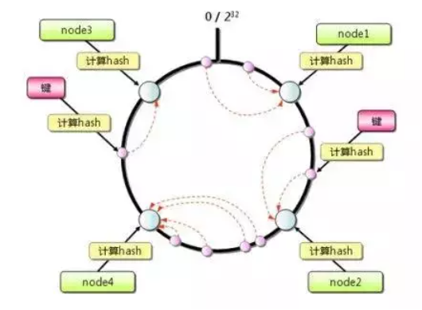
③Hash 环的数据倾斜问题
Hash 环在服务器节点很少的时候，容易遇到服务器节点不均匀的问题，这会造成数据倾斜，数据倾斜指的是被缓存的对象大部分集中在 Redis 集群的其中一台或几台服务器上。
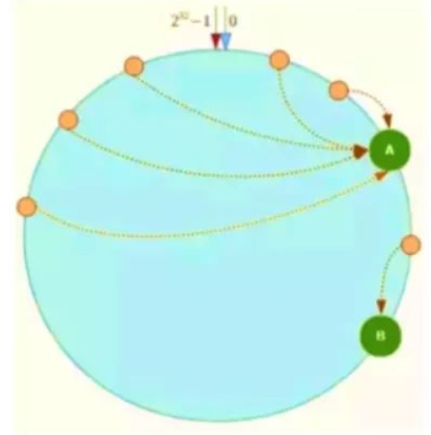
如上图，一致性 Hash 算法运算后的数据大部分被存放在 A 节点上，而 B 节点只存放了少量的数据，久而久之 A 节点将被撑爆。
针对这一问题，可以引入虚拟节点解决。简单地说，就是为每一个服务器节点计算多个 Hash，每个计算结果位置都放置一个此服务器节点，称为虚拟节点，可以在服务器 IP 或者主机名后放置一个编号实现。
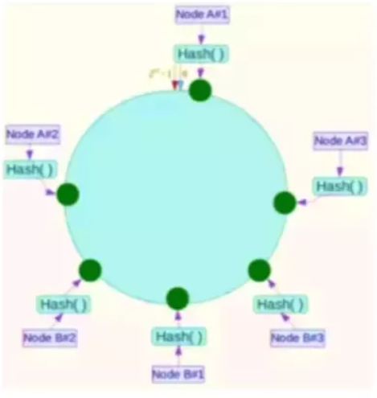
例如上图：将 NodeA 和 NodeB 两个节点分为 Node A#1-A#3，NodeB#1-B#3。